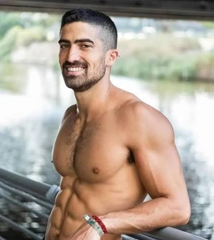

גבים
חג'בי זיו ז"ל
מוזיקאי ונגן גיטרה, אוהב ספורט, תרבות וריקוד
סיפור חיים
זיו, בנם של רעות חרל"פ ופסח חג'בי, נולד בה' בסיוון תשנ"ד (15.05.1994) בקיבוץ גבים. אחיו הבכור של גיא.
הוא גדל בקיבוץ גבים ולמד בתיכון האזורי "בית חינוך שער הנגב". הכינוי שלו היה מוש - קיצור של מושלם - כי החל מילדותו זהרו יופיו, חוכמתו וליבו הטוב. "ילד חייכן ומואר, אח בכור שהחזיק סביבו את הבית", סיפר חברו, "עמוד התווך של משפחתו הגרעינית כמו גם של הרבה מחבריו". מצויד בכישרון לסלול לעצמו את הדרך המדויקת עבורו, הוא שעט קדימה כשבמקביל עטף את סביבתו באהבה, באכפתיות ובנתינה. המוזיקה נכחה אצלו תמיד - כמאזין וכנגן גיטרה מוכשר.
לאחר שסיים את לימודיו בתיכון, יצא לשנת שירות בפנימייה פוסט-אשפוזית לנוער בסיכון - תקופה שהייתה עבורו מלאה בסיפוק ובלמידה.
בתום שנת השירות התגייס לצבא ושירת בחטיבת הצנחנים בפלס"ר (פלוגת סיירת).
לאחר שחרורו עבד במשך שנה בעבודה מועדפת בדגה בקיבוץ מעגן מיכאל, ואז יצא לטיול הגדול ובמשך עשרה חודשים טייל לבדו במזרח הרחוק.
בשנותיו האחרונות זיו התגורר ביפו. את רוב זמנו השקיע בלמידת השפה והתרבות הערבית-מצרית וכתוצאה מכך דיבר את השפה ברמה של שפת אם. הוא היה אמור להתחיל ללמוד מזרחנות ויחסים בינלאומיים באוניברסיטת תל אביב בשנת הלימודים האקדמית תשפ"ד, שמועד תחילתה אוקטובר 2023.
זיו היה גבר צנוע, אדם רוחני ולא חומרי. תמיד חיפש את האמיתי ואת הטוב באחר, הושיט עזרה לנזקקים, ראה את החלשים, וכמו מים שקטים חלחל ברוך ללבבות רבים. הוא האמין שכל אחד הוא "קודם כול מלך, אלא אם הוכח אחרת".
בנוסף, היה לו חוש הומור משובח. סיפר חברו: "זיו היה אדם חד כתער ושנון בצורה לא תיאמן. תמיד הייתה לו בדיחה ממש טובה בשלוף על כל מצב וסיטואציה, וכמה הומור שחור הוא ידע להניב מכל אסון".
ספורט היה חלק בלתי נפרד בחייו, וכמו כל דבר שעשה, גם בתחום זה הצטיין ותמיד היה בכושר, כולל כאוהד פעיל של קבוצת הכדורגל "הפועל תל אביב". אבל הכי הוא אהב לרקוד - בכל מקום, בכל סיטואציה, במסיבות בארץ ובפסטיבלים בעולם, ובמיוחד אהב לחגוג ולרקוד לצלילי מוזיקת טראנס.
וכך, ביום שישי 6 באוקטובר 2023, הוא נסע עם חבריו למסיבת ה"נובה" סמוך לקיבוץ רעים, שבה חגגו כ-3,000 איש. ביחד איתם הוא בילה ורקד לקול הצלילים האהובים עליו.
שבעה באוקטובר
בשבת, כ"ב בתשרי, שמחת תורה תשפ"ד, 7 באוקטובר 2023, בשעה שש וחצי בבוקר, פתח ארגון הטרור חמאס במתקפת פתע על ישראל. בחסות ירי מסיבי של טילים ורקטות מרצועת עזה לאזורים נרחבים בארץ חדרו אלפי מחבלים דרך גדר הגבול שנפרצה, מהים ומהאוויר והחלו במתקפה רצחנית על יישובי עוטף עזה - קיבוצים ומושבים - ועל הערים הסמוכות שדרות, אופקים ונתיבות; על מבלי מסיבות טבע סמוך לקיבוצים רעים ונירים; על בסיסי צה"ל ועל העוברים בדרכים באזור. המחבלים רצחו כשמונה-מאות אזרחים ואזרחיות בני כל הגילים בבתיהם, במכוניותיהם ובעת שבילו במסיבות אחרי שביצעו בהם פשעים כבדים לרבות אונס והתעללות; חטפו לרצועת עזה מאות ישראלים - חיילים ואזרחים וכן עובדים זרים מהקיבוצים; החריבו, בזזו והעלו באש בתים ורכוש. למעלה משלוש-מאות חיילים, שוטרים וחברי כיתות הכוננות המקומיות נפלו בקרבות באותו יום.
בבוקר זה החלה מלחמה.
עם תחילת האזעקות, זיו וחבריו ניסו להימלט משטח המסיבה, תחילה ברכב ולאחר מכן רגלית, וחלק מהזמן הסתתרו בשיחים. מעדויות חבריו של זיו שהיו עימו בזמן המנוסה התברר שהוא עזר לאנשים לברוח והציל את חייהם. בשלב מסוים במנוסתם התפצלה קבוצת החברים ובשעה 09:05 אבדו עקבותיו של זיו והוא הוגדר כנעדר. משפחתו שנעה בין תקווה לייאוש חיפשה אחריו עד שכעבור שבוע נמצאה גופתו.
במסיבת ה"נובה" ליד קיבוץ רעים נרצחו למעלה מ-380 איש על ידי מחבלים שהגיעו לאזור מכמה כיוונים.
זיו חג'בי נרצח על ידי מחבלים בפסטיבל "נובה" בכ"ב בתשרי תשפ"ד (07.10.2023), בן 29 בהירצחו. הוא הובא למנוחות בבית העלמין בקיבוץ גבים. הותיר אחריו הורים ואח.
זיכרון והנצחה
ספדה אימו: "כבר כילד היית לי עוגן ומקור של נחת וגאווה. הכתפיים הקטנות שלך הרגישו לי לעיתים כמו הכתפיים הרחבות שפיתחת בשנים האחרונות. יפה שלי, כמה שאני מתגעגעת לחיבוק שלך. גם בגיל ההתבגרות נשארת הבן המרצה, נער יפה נפש, עם לב נדיב, קשוב וער לסביבה.
השנים עברו ואתה, עם הבגרות שנכפתה עליך בטרם זמן והחוסן המנטלי המשכת להשיט את הסירה בתושייה ורגישות במשפחה המורכבת שלנו.
11 שנים שאתה מחוץ לבית (רובן בתל אביב), חי חיים עצמאיים ומלאים עם המון סיפוק ואושר. מאז ומתמיד ידעת מה אתה רוצה. היית נחוש ומדויק לעצמך. לא עניין אותך המיינסטרים, לא דפקת חשבון מה יגידו.
בשנים האחרונות בהן התקרבנו עוד יותר הרגשת צורך לומר לי כמה חשוב לך שאני מאפשרת לך להיות מי שאתה ותמיד גאה בבחירות שלך. תפיסת החינוך שלי התבססה על מילות השיר 'קום ותהיה רק מה שבא לך, כי בשבילי אתה מלך העולם'. ניהלנו שיחות נפש ארוכות. דיברנו כמה שאנו דומים אל מול השוני החברתי. תמיד הקפדת שהשיחה תתחיל במה עובר עלי. דאגת לשלומי. בחודש האחרון ניסית לפתוח אותי ליותר דברים, במיוחד לאנשים.
חזרת ואמרת שגם אם אני לא שומעת ממך לפרקים, זה כי אתה מאושר ומתמקד בלימוד השפה הערבית שהיא בראש סדר העדיפויות שלך. אמרת, שהאושר שלך הגיע מהרוחניות, החברים וההתמקצעות בערבית. חודש לפני האסון שיתפת אותי שאתה מתכנס יתר על המידה עם לימודי הערבית וזה על חשבון זמן חברים, אבל שנת הלימודים מתחילה עוד רגע ואתה צריך להגיע ברמה הכי גבוהה שאפשר.
בכל דבר שעשית שאפת לפרפקציוניזם. כזה אתה זיוי - מיוחד, נעלה, מושלם".
כתב אחיו: "יש אנשים שתמיד יודעים מה להגיד, אבל אתה תמיד ידעת מה לעשות. אומרים שאנשים לא זוכרים מה אמרת אלא מה גרמת להם להרגיש. וזה אתה, אחי, גרמת לכל אחד להרגיש שהוא הכי טוב, שהוא מספר אחת, שאתה איתו עד הסוף... אחי היקר, הלב של כולנו, אתה המלך כי איתך כל אחד מרגיש מלך. חברות אמיתית זה אתה. גיבור שקט זה טבוע בך. אופטימיות בלתי נגמרת לצאת לקרב זה רק איתך. שיעור בפשטות, אהבת האחר, נתינה, עשייה מהלב וכיף, כמה כיף. בלי מילים לימדת אותנו בשקט. איתך מטורף, איתך רגוע, איתך טוב, תמיד טוב. נזכור אותך צוחק. נזכור אותך אוהב. נזכור אותך נהנה. לחופש נולדת אחי. אל תפסיק לרקוד".
ספד לו עודד, חברו מהקיבוץ: "אחי היקר, הדם בוורידיי מהול גם בשלך כי ככה זה לגדול ביחד בקיבוץ, בעוטף... נוח על משכבך בשלום אהוב שלי".
כתב חברו: "זיו הוא הבחור הכי חתיך בכל חבורה שתניחו אותו, אבל יותר מזה: הנפש הכי יפה, האישיות הכובשת והמדהימה שגרמה לכולם להרגיש אהובים ומוצלחים לידו. יש כאלה שטובים בהכול, אבל זיו היה הרבה מעבר לזה. הוא היה טוב בהכול בעצמו, אין ספק, אבל הקסם האמיתי שלו היה לגרום לכולם סביבו להיות טובים גם הם. זיו תמיד ידע לעודד ולדחוף אנשים קדימה ותמיד ידע מתי זמן טוב לאתגר את הסביבה ומתי לתת רגע לנוח".
סיפר חברו: "זיו האהוב השאיר אחריו כמות אדירה של חברים מדממים. ביום הלוויה שלו הוא הותיר שובל של אנשים מדוכן ההספדים ועד לחניה כי פשוט לא היה מקום להכיל את כמות האנשים שבאו להיפרד מהנשמה המיוחדת שהוא היה".
זיו הונצח ב"חמ״ל המבצעים" - אתר ההנצחה לאוהדי "הפועל תל אביב" חללי המלחמה שהחלה ב-07.10.2023.